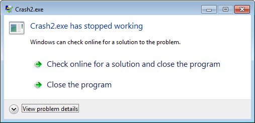
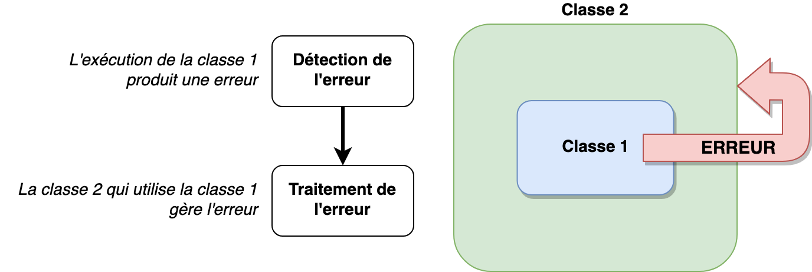

class: center, middle # Programmation orientée objet : # exceptions <img height="200px" src="img/php_logo.png"> --- ## Problématique Lors de l'exécution d'un programme, tout ne se passe pas toujours comme prévu...  -- * accès à un objet qui n'existe pas * accès à un index qui dépasse le tableau * calcul incorrect (division par 0) * connexion à une base de données interrompue (coupure internet) * ... --- ## Principe des exceptions  --- ## Traiter l'erreur : lancer une exception Lorsqu'une erreur est détectée, la classe responsable de l'erreur **lance** une erreur. ```php class Calculatrice{ function division($dividende, $diviseur){ // Détection de l'erreur if(diviseur == 0){ // Lancement ("throw") de l'erreur throw new DivisionParZeroException(); // Après un throw, la fonction s'arrête } // Ici, tout va bien return $dividende / $diviseur; } } ``` --- ## Gérer l'erreur : attraper une exception ### La méthode propage l'erreur ```php $calculette = new Calculatrice(); // Tout va bien $calculette.division(3,2); // L'exécution de la méthode s'arrête // et une exception est lancée $calculette.division(3,0); ``` --- ## Gérer l'erreur : attraper une exception ### La méthode attrape l'erreur ```php try{ $calculette = new Calculatrice(); // Tout va bien $calculette.division(3,2); // L'exécution du try s'arrête et une exception est lancée $calculette.division(3,0); }catch(DivisionParZeroException $e){ // L'exception est attrapée echo $e->getMessage(); }finally{ // Bloc de code qui s'exécute quoi qu'il arrive // Après un bloc try ou un bloc catch } ``` --- ## Définition d'une exception personnalisée ```php class DivisionParZeroException extends Exception { } ``` --- ## Coding time ! ### Todo : * Exercice 1 (Série 6) * Exercice 2 (Série 6) * Exercice 3 (Série 6) <img height="400px" src="img/fast.gif">